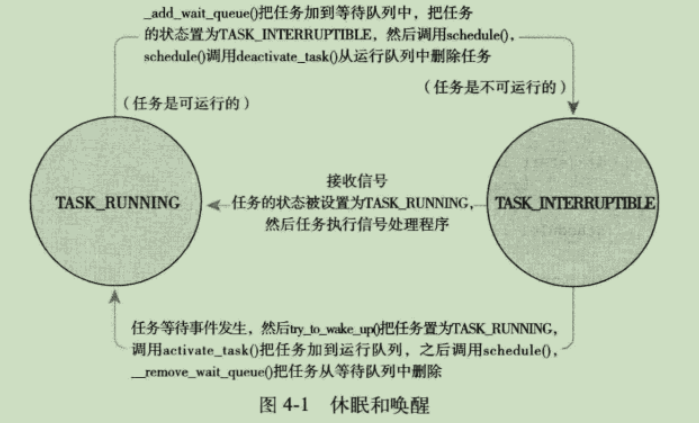

现代操作系统
操作系统
管理计算机硬件与软件资源的计算机程序。操作系统需要管理与配置内存、决定系统资源供需的优先次序、控制输入设备与输出设备、操作网络与管理文件系统等基本事务。操作系统也提供一个让用户与系统交互的操作界面。
- 用户态和内核态
大多数现代CPU提供两种执行模式，内核态和用户态。CPU可以在内核态执行指令集中的所有指令，以及使用所有的硬件资源，用户程序通过系统调用或者触发某个异常，会陷入到内核态；但在用户态时，只能执行部分指令，使用部分硬件的资源。两种执行模式使得设计人员只能在用户模式下运行用户程序，从而拒绝他们访问关键指令。 - 系统调用
系统调用中断是用户程序使用操作系统资源的唯一界面接口；对于intel x86, 通过中断指令int进入内核。例如linux在boot/setup.s中会将用户程序发出的软件中断设置为 int 128（0x80），这条指令会触发一个异常导致系统切换到内核态，并执行128号异常处理程序，即系统调用处理程序system_call()。
寄存器 eax 中存放着系统调用号，而携带的参数可依次存放在寄存器 ebx、ecx、edx、esi和edi中，需要更多参数时，可以用其中一个寄存器存放指向所有这些参数在用户空间地址的指针。
系统调用过程: a. 用户程序中包含一段含int 0x80指令的代码(通常在库函数中)。 b. 操作系统写中断处理，并获取想调用的内核程序的编号。 c. 操作系统根据编号转到相应的执行代码。
- 内存层次模型 寄存器 -> 高速缓存 -> 主存 -> 磁盘， 访问速度由快到慢，容量由小到大。
-
I/O的三种方式：
1》用户程序发起系统调用，内核会将其转换为相应驱动程序的程序调用，然后设备驱动程序启动I/O 并循环检查该设备是否完成工作。当I/O调用完成后，设备驱动程序把数据送到指定的地方并返回。 这种方式称为busy waiting. 这种方式的缺点是要一直占据CPU，CPU会一直轮询I/O设备直到I/O操作完成。 2》设备驱动程序启动设备并且让该设备在操作完成时发生中断。设备驱动程序在该时刻返回， 操作系统接着在需要时阻塞调用者并安排其他工作进行。当设备驱动程序检测到该设备操作完成时， 会发出一个中断通知操作完成。 3》使用特殊的硬件：直接存储器访问（direct memory access， DMA）芯片。 它可以控制内存和某些控制器之间的位流，而无需CPU的干预。CPU会对DMA芯片进行设置，说明需要传送的字节数， 有关的设备和内存地址以及操作方向。当DMA芯片完成操作时，会造成中断。
-
操作系统结构：单体结构、分层系统、微内核、客户-服务端系统、虚拟机和外核。
- big-endian: 将高序字节存储在起始地址;
- little-endian: 将低序字节存储在起始地址(地址低位存储值的低位,
地址高位存储值的高位)
进程
一个正在执行程序的实例，系统进行资源分配的最小单位。(在 Linux 内核中，进程通常被称作任务（task），而把运行在用户空间的程序称作进程)
-
进程的概念主要有两点：
第一，进程是一个实体。每一个进程都有它自己的地址空间，虚拟内存技术使得每个进程都可以独占整个内存空间，地址从零开始，直到内存上限。 每个进程都将这部分空间（从低地址到高地址）分为六个部分：
TEXT段：整个程序的代码，以及所有的常量。这部分内存是是固定大小的，只读的; DATA段：又称GVAR：存储已经初始化的全局变量和静态变量; BSS(Block Started by Symbol)段：存放程序中未初始化的或者初始化为0的全局变量和静态变量的一块内存区域。 特点是可读写的，在程序执行之前BSS段会自动清0。 HEAP（堆空间）：动态内存区域，使用malloc或new申请的内存; 未使用的内存; STACK（栈空间）：存储局部变量、参数、返回值，函数调用开始会参数入栈、局部变量入栈；调用结束依次出栈。 其中堆空间和栈空间的大小是可变的，堆空间从下往上生长，栈空间从上往下生长。
第二，进程是一个“执行中的程序”。程序是一个没有生命的实体，只有处理器赋予程序生命时（操作系统执行之），它才能成为一个活动的实体，我们称其为进程。 -
进程=资源+指令执行序列: 将资源和指令执行分开, 一个资源+多个指令执行序列, 指令执行序列即线程: 保留了并发的特点, 避免了进程资源切换（如映射表的切换）的代价。
-
进程的层次结构
当进程创建了另一个进程后，父进程和子进程以某种形式继续保持关联。子进程自身可以创建更多的进程，组成一个进程的层次结构。在UNIX中，进程和它的所有子进程以及后裔共同组成一个进程组。而在windows中，所有进程的地位都是相同的，不过在创建进程时，父进程可以得到一个特别的令牌（句柄），用以控制子进程。
-
进程状态
运行态：该时刻进程实际占用CPU
就绪态：可运行，拥有除CPU以外的所有所需资源，但因为其他进程正在运行而暂时停止
阻塞态：进程等待直至某个外界事件发生才能转为就绪态，否则将一直无法执行
(五状态模型下还有新建态和终止态， 前者：新建态对应于进程刚刚被创建的状态，操作系统为创建的新进程创建PCB，分配资源，当进程拥有除CPU以外的所有资源时，将进入就绪态，等待调度执行； 后者：进程的终止要通过两个步骤，首先，是等待操作系统进行善后，回收资源；然后撤销PCB，退出主存。当一个进程到达了自然结束点，或是出现了无法克服的错误，或是被操作系统所终结，或是被其他有终止权的进程所终结，它将进入终止态。进入终止态的进程以后不再执行，但依然保留在操作系统中等待善后。
linux下进程状态
僵尸进程
避免僵尸进程 其中的handler为父进程注册的信号处理函数，当子进程退出时，父进程收到SIGCHLD信号，如果父进程此时正在处理其他事情，则可以调用提前注册的handler，在其中调用wait/waitpid，来获取子进程退出状态，然后回收子进程剩余信息。对于产生信号，我们可以在产生信号前利用方法 signal(int signum, sighandler_t handler) 设置信号的处理。 如果没有调用此方法，系统就会调用默认处理方法：中止程序，显示提示信息。我们可以调用系统的处理方法， 也可以自定义处理方法。系统里边定义了三种处理方法： SIG_DFL: 默认动作，默认的处理方式是不理会这个信号，但是也不会丢弃子进行状态，所以如果不用wait/waitpid 对其子进行进行状态信息回收，会产生僵尸进程。 SIG_IGN: 忽略信号，子进程状态信息会被丢弃，也就是自动回收了，所以不会产生僵尸进程。 自定义处理方式，如自定义handler
-
进程描述符
内核把进程的列表存放在叫做任务队列的双向循环链表中，链表的每一项类型都是task_struct,称为进程描述符、进程控制块(Process Control Block,PCB)、进程表，包含一个具体进程的所有信息。如
(1)进程标识符(唯一)， PID (2)进程当前状态，通常同一状态的进程会被放到同一个队列； (3)程序状态字、程序计数器 (4)文件描述符 (5)进程优先级；调度策略 (6)指向父进程、子进程链表、兄弟进程的指针 (7)flags, 反应进程状态的信息，但不是运行状态，用于内核识别进程当前的状态，以备下一步操作; PF_FORKNOEXEC 进程刚创建，但还没执行。 PF_SUPERPRIV 超级用户特权。 (8)进程同步与通信机制，用于实现进程间互斥、同步和通信所需的信号量等； 用于保护资源分配或释放的自旋锁； (9)指向内存描述符(mm_struct)的指针mm和active_mm，mm指向的mm_struct结构描述了一个进程的整个虚拟地址空间； 对于内核线程来说，没有地址空间，因此其mm域为NULL，而active_mm指向的是切换前的进程的mm_struct. 指向内核栈的指针，task_struct->stack. (9)进程相关的其他信息。例如进程创建时间、在内核态/用户态累计运行时间等。
ps1. 一个进程的虚拟地址空间主要由两个数据结来描述。一个是最高层次的：mm_struct，一个是较高层次的：vm_area_structs。最高层次的mm_struct结构描述了一个进程的整个虚拟地址空间。较高层次的结构vm_area_truct描述了虚拟地址空间的一个区间（简称虚拟区）。每个进程只有一个mm_struct结构，在每个进程的task_struct结构中，有一个指向该进程的结构。可以说，mm_struct结构是对整个用户空间的描述。
ps2. 每个进程被创建的时候，在生成进程描述符task_struct的同时，会生成两个栈，一个是用户栈，位于用户地址空间；一个是内核栈，位于内核空间。当进程在用户地址空间中执行的时候，使用的是用户栈，CPU堆栈指针寄存器中存的是用户栈的地址；同理，当进程在内核空间执行时，CPU堆栈指针寄存器中放的是内核栈的地址。
位于用户空间的进程进行系统调用时，它会陷入内核，让内核代其执行。此时，进程用户栈的地址会被存进内核栈中，CPU堆栈指针寄存器中的内容也会变为内核栈的地址。当系统调用执行完毕，进程从内核栈找到用户栈的地址，继续在用户空间中执行，此时CPU堆栈指针寄存器就变为了用户栈的地址。
ps3. thread_info: 对于寄存器较少的硬件体系结构来说，使用进程的task_struct是通过存放在进程内核栈栈顶的struct thread_info来实现的，其task域中存放了指向该任务实际task_struct的指针。 -
进程创建
UNIX系统采用fork()和exec()两个单独的函数来完成进程的创建: fork()通过拷贝当前进程创建一个子进程，子进程与父进程的区别仅在于PID、PPID(子进程的PPID为被拷贝进程的PID)和某些资源与统计量(例如挂起的信号，没必要被拷贝);
exec()函数负责读取可执行文件并将其载入地址空间开始运行。
copy-on-write(写时复制): 传统fork()系统调用直接拷贝父进程所有资源给子进程，不仅效率低下，且如果新进程打算立即执行一个新的映像，拷贝将前功尽弃；而linux的fork()系统调用采用写时拷贝技术来推迟甚至免除拷贝数据，具体实现为: 在创建子进程时，并不会立刻拷贝父进程的资源给子进程，也即此时内存不会为子进程分配实际的物理内存页面，而是让它共享父进程的内存页面；只有当父进程或新进程中任意一个有写内存操作时，系统才会为执行写操作的进程分配相关的独自使用的内存页面。
fork(): linux通过clone()系统调用实现fork()，通过一系列参数标志来指明父、子进程需要共享的资源; 事实上fork()、vfork()、_clone()库函数都根据各自需要的参数标志来调用clone(), 然后由clone()来调用do_fork()来完成创建中的大部分工作，该函数调用copy_process()，然后让进程开始运行，具体完成工作为：
fork()=>clone()=>do_fork()=>copy_process()
vfork():除了不拷贝父进程的页表项，vfork()和fork()功能相同。子进程作为父进程的一个单独的线程在它的地址空间中运行，父进程被阻塞，直到子进程退出或执行exec(), 且子进程运行期间不能向地址空间中写入。 -
进程终止
调用exit()系统调用，或者接受无法处理、忽略的信号或异常时被动终结。大部分工作依赖do_exit()完成，此后进程处于TASK_ZOMBIE状态，存在的唯一目的就是向父进程提供信息，父进程检索到信息后(通过wait()系统调用族)，或者通知内核那是无关信息后，该进程所持有的剩余内存也被释放。
因此父进程在子进程前退出，必须保证子进程能找到一个新的父亲，否则会成为孤儿进程，在退出时一直处于ZOMBIE状态，无法释放剩余内存。通常是在当前线程组内找一个线程或者让init进程作为父进程。 -
三个特殊进程
idle进程(PID = 0), init进程(PID = 1)和kthreadd(PID = 2)Linux中PID为0的进程是所有其他进程的祖先, 也称作idle进程或swapper进程(交换进程，因为init_task中 comm字段即为swapper)，在系统启动时，根据预定义的INIT_TASK宏定义完成初始化，生成进程描述符init_task， 0号进程的成员大部分是静态定义的，其成员初始值也都通过对应的初始化宏来初始化，如INIT_MM。 0号进程调用start_kernel函数来对内核各个重要子系统进行初始化(如内存、CPU)，然后调用rest_init() 来完成剩余的部分的初始化，在其中会通过 pid = kernel_thread(kernel_init, NULL, CLONE_FS); pid = kernel_thread(kthreadd, NULL, CLONE_FS | CLONE_FILES); 创建两个进程； 前者即为1号进程(刚创建时尚属于内核进程，共享0号进程的资源), 在kernel_init函数中来完成各种外设驱动的初始化， 并在最后调用execve()来加载init可执行文件，为1号进程加载独立的地址资源，此时1号进程由内核态转变为用户态， 即成为init进程。 后者是由1号进程创建的，称为2号进程(进程名即kthreadd)，始终运行在内核空间, 负责所有内核线程的调度和管理, 是所有内核线程的父线程。，
线程
- 线程
线程（thread）是操作系统能够进行运算调度的最小单位，它被包含在进程之中，是进程中的实际运作单位。
多线程：1》并行实体拥有共享同一个地址空间和所有可用数据的能力。（即一个进程包含多个线程， 它们共享该进程的地址空间， 而多进程有不同的地址空间）。 2》线程比进程更轻量级，比进程更容易创建，也更容易撤销。 3》若存在大量的计算和I/O处理，拥有多线程允许这些活动彼此重叠进行。4》在多CPU系统中，多线程可以实现真正的并行。
在用户空间管理线程时，每个进程需要有其专用的线程表, 线程表（or thread control block, TCB）：跟踪进程中的线程，记录各个线程的属性， 如每个线程的程序计数器，堆栈指针，寄存器和状态。
-
线程切换与进程切换
进程切换分两步：1.切换页目录以使用新的地址空间；2.切换内核栈和硬件上下文。
对于linux来说，线程和进程的最大区别就在于地址空间，对于线程切换，第1步是不需要做的，第2步是进程和线程切换都要做的。每个进程都有自己的虚拟地址空间，而线程是共享所在进程的虚拟地址空间的，因此同一个进程中的线程进行线程切换时不涉及虚拟地址空间的转换. -
线程实现方式:
1》在用户空间实现线程：特点： 整个线程包放入用户空间中，内核对线程包一无所知。从内核角度考虑，就是按正常的方式管理，即单线程进程 。 线程在一个运行时系统的上层运行，该运行时系统是一个管理线程的过程的集合。
优点：
1、用户级线程包可以在不支持线程的操作系统上实现。
2、线程切换比内核快更多（因为保存该线程状态的过程和调度程序都是本地过程，启动它们比进行内核调用效率更高，不需要陷入内核，不需要上下文切换，也不需要对内存高速缓存进行刷新，使得线程调度十分快捷。
3、允许每个进程有自己定制的调度算法。
缺点:
1、线程发生I/O或页面故障引起的阻塞时，如果调用阻塞系统调用则内核由于不知道有多线程的存在，而会阻塞整个进程从而阻塞所有线程;
2、用户级线程只能占用一个核，无法做到并行处理，不能利用多核的优势；
3、如果一个线程开始运行，那么该进程中的其他线程就不能运行，除非第一个线程自动放弃CPU；一个单独的进程内部，没有时钟中断，所以不可能用轮转调度的方式调度线程。除非某个线程按照自己的意志进入运行时系统，否则调度程序就没有任何机会。
2》在内核中实现线程：特点：内核支持并管理线程，不再需要运行时系统，每个进程也没有线程表。在内核中有用来记录系统中所有线程的线程表。当某个线程希望创建一个新线程或撤销一个已有线程时，它进行一个系统调用，这个系统调用通过对线程表的更新完成线程创建或撤销工作。
优点:
1、所有能够阻塞线程的调用都以系统调用的形式实现。
2、如果某个线程引起了页面故障，内核可以很方便地检查该进程是否有任何其他可运行的线程。
缺点:
1.内核级线程切换代价更大。2。内核级线程数量有限，扩展性比不上用户级线程。
3》 混合实现：使用内核级线程，然后将用户级线程与某些或全部内核线程多路复用。
-
linux 线程实现
实现机制与windows有很大差异，后者在内核中提供了专门支持线程的机制，并称其为轻量级线程。
线程的创建和进程创建过程类似，只不过在调用clone()是需要传递一些参数标志来指明需要共享的资源。
pid = clone(function, stack_ptr, sharing_flags, arg)调用这个函数可以在当前进程或新的进程中创建一个新线程，具体依赖于参数sharing_flags. sharing_flags是一个位图，常见的位含义有: -
内核线程
独立运行在内核空间的标准进程，和普通进程的区别在于内核线程没有独立的地址空间。它们只在内核空间运行，从不切换到用户空间，和普通进程一样，可以被调度和抢占。
进程调度
- 多任务: 多任务操作系统就是能同时并发低交互执行多个进程的操作系统
进程调度策略
决定调度程序何时让什么进程运行，负责优化使用处理器时间。
-
I/O消耗型进程：这里的I/O是任何类型的可阻塞资源，进程的大部分时间用来提交I/O请求或是等待I/O请求。
处理器消耗型进程：时间大多用在执行代码上，除非被抢占，否则通常一直在运行。
出于系统响应速度考虑，调度器会降低处理器消耗型进程的调度频率，而延长其执行时间。
调度策略通常要在进程响应时间和最大系统利用率(高吞吐量)这两个目标间寻求平衡 -
进程优先级：linux采用了两种优先级范围
nice值，范围[-20,19], 越大，优先级越小, 在linux中，nice值代表时间片比例。
实时优先级，默认范围[0,99], 越大，优先级越高，任何实时进程的优先级都高于普通进程。 -
时间片
表明进程在被抢占前所能持续运行的时间
Linux进程调度算法
- 完全公平调度(CFS): 其是一个针对普通进程的调度类。
设计理念:进程调度的效果如同系统具备一个理想中的完美多任务处理器，在这种系统中，每个进程将获得1/n的处理器时间(n是可运行的进程数量)。
内部逻辑:CFS并没有直接分配时间片到进程，而是将处理器的使用比划分给了进程，这个比例会受到nice值的影响；每个进程运行一段时间，循环轮转，CFS然后选择运行最少(vruntime最小)的进程作为下一个运行进程。
具体实现: CFS使用红黑树来组织可运行进程队列，并用其迅速找到最小vruntime值的进程。 -
vruntime，虚运行时，
分配给进程的运行时间=调度周期*进程权重 / 所有可运行进程权重之和 (式1) vruntime = 实际运行时间*1024/进程权重 = 调度周期*1024/所有可运行进程权重之和 (式2，1024是nice为0的进程的权重)虽然进程的权重不同，但vruntime的增长速度是相同的；对于vruntime较小的进程，说明其之前运行时间短，会被优先调度， 这即CFS公平调度的由来。 -
休眠和唤醒
等待队列是由等待某些事件发生的进程组成的简单链表。  -
上下文切换: 从一个可执行进程切换到另一个可执行进程
由shcedule()调用context_switch()完成两项基本工作: 把虚拟内存从上一个进程映射切换到新进程；从上一个进程的处理器状态切换到新进程的处理器状态，包括保存、恢复栈信息和寄存器信息。
need_resched: 每个进程都包含一个need_resched标志，用来表明是否需要重新执行一次调度。 -
用户抢占：从系统调用返回用户空间或者从中断处理程序返回用户空间时，如果need_resched被设置，会导致schedule()被调用，内核会选择一个其他更合适的进程运行。
-
内核抢占：每个进程的thread_info中引入了preemept_count计数器，初始为0，使用锁时，+1，释放锁时，-1；当为0时，内核就可执行抢占。
内核抢占会发生在:中断处理程序正在执行，且返回内核空间之前； 内核代码具有抢占性的时候； 内核中的任务显示调用schedule； 如果内核中的任务阻塞
-
实时调度策略
中断
中断处理程序的局限:
中断处理流程分为两部分，上半部是中断处理程序，完成对硬件中断的即时响应；下半部执行与中断处理密切相关但中断处理程序本身不执行的工作。下半部一般在中断处理返回后就立即执行，而且执行期间允许响应所有中断。
这种设计可使系统处于中断屏蔽状态的时间尽可能短，以此来提高系统的响应时间。
下半部实现机制：软中断、tasklet、工作队列
内核同步
并行&并发
如果某个系统支持两个或者多个动作（Action）同时存在，那么这个系统就是一个并发(concurrent)系统。如果某个系统支持两个或者多个动作同时执行，那么这个系统就是一个并行(parallel)系统。
在并发程序中可以同时拥有两个或者多个线程。这意味着，如果程序在单核处理器上运行，那么这两个线程将交替地换入或者换出内存。这些线程是同时“存在”的——每个线程都处于执行过程中的某个状态。如果程序能够并行执行，那么就一定是运行在多核处理器上。此时，程序中的每个线程都将分配到一个独立的处理器核上，因此可以同时运行。
并行”概念是“并发”概念的一个子集。也就是说，你可以编写一个拥有多个线程或者进程的并发程序，但如果没有多核处理器来执行这个程序，那么就不能以并行方式来运行代码。
同步
- 临界区: 对共享内存进行访问的程序片段称作临界区域(critical region)或临界区(critical section)。 若两个进程不可能同时处于临界区域，就能避免竞争条件。
- 竞态条件（race condition）：即多个进程读写某些共享数据，而最后的结果取决于进程运行的精确时序。
- 同步: 为了在避免竞争条件的同时，保证使用共享数据的并发进程能正确和高效地协作，需要满足4个条件：
1、任何两个进程不能同时处于其临界区。
2、不要对CPU的速度和数量做任何假设。
3、临界区外运行的进程不得阻塞其他进程。
4、不得使进程无限期等待进入临界区。 - 需要进程同步原因
锁
- 加锁: 设置一个锁变量，可以设初始为0，有进程想进入临界区时，先对锁变量测试，为0则进，进入后将其设为1。0表示临界区没进程，1代表已有进程进入临界区。但是仍存在问题，当进程a把锁变量设为1之前恰好又有进程b进入临界区，临界区将有2个进程。对于此问题，一般对获得锁和改变锁变量采用原子操作，如下面的TSL指令。
- TSL RX, LOCK：测试并加锁，将一个内存字读取到寄存器RX中，然后在该内存地址设置一个非0值，并保证读写操作不可分割。其它cpu不能在TSL指令结束之前访问该内存字。 执行TSL指令（test and set lock）的cpu将锁住内存总线，防止其它cpu在此指令完成前访问内存。
具体方法：使用一个共享变量lock，lock为0时任何进程都能使用TSL指令，并将lock设为1，读写共享内存；操作结束后，利用move指令将lock重新设为0. （可使用XCHG指令替代TSL，它原子性地交换两个位置的内容。） - 死锁
- 锁的争用
指当锁正在被占用时，有其他进程试图获得该锁；当有多个进程都在等待获得该锁时，锁就处于高度争用状态。
锁的作用使得程序以串行方式访问资源，会降低系统性能。被高度争用的锁(频繁被占用或长时间被占用)会成为系统的瓶颈。
当锁争用严重时，加锁太粗(加锁的粗粒度指被保护的数据规模，过粗的锁用来保护大块数据，精细的锁则保护较小的元素)会降低扩展性；锁争用不明显时，加锁太细会加大系统开销，带来浪费。
内核同步方法
- 原子操作: 保证指令在执行过程中不会被打断，内核提供了两种原子操作接口，分别针对整数和单独的位进行操作。
- 自旋锁：是指当一个线程试图获取锁的时候，如果锁已经被其它线程获取，那么该线程将循环等待，然后不断的判断锁是否能够被成功获取，直到获取到锁才会退出循环。自旋锁会造成忙等待。因此自旋锁一般适用于加锁时间不长，且代码不会睡眠(例如中断处理程序) ，反之使用信号量更合适。
读/写自旋锁：一个或多个任务可以并发地持有读者锁，但同时最多只能有一个任务持有写锁。因此不能将一个锁由读锁升级为写锁，否则如果读锁没有被释放，写锁将会自旋，等待所有读者释放锁，包括其本身，从而造成死锁。 -
信号量
信号量不会禁止内核抢占，持有信号量的代码可以被抢占; -
互斥体(mutex)
实现互斥的特定睡眠锁，其行为和使用计数1的互斥信号量类似，但操作接口更简单，限制性更强，适应于定向性强的场景。
这里的互斥体也包括信号量；中断上下文中不能睡眠，因此只能使用自旋锁
- 完成变量
completion variable: 如果在内核中一个任务需要发出信号通知另一任务发生了特定事件，利用完成变量是使两个任务得以同步的简单方法。如果一个任务要执行一些工作时，另一个任务就会在完成变量上等待。当这个任务完成工作时，就会使用完成变量去唤醒在等待的任务。
例如当子进程执行或退出时，vfork()系统调用使用这些完成变量来唤醒父进程。
内存管理
理解内存空间
以32位x86 CPU为例:
1、x86 CPU采用了段页式地址映射模型。进程代码中的地址为逻辑地址， 经过段页式地址映射(先映射到线性空间，得到线性地址，再根据页表进行映射)后，才真正访问物理内存。
2、Linux简化了分段机制,使得虚拟地址与线性地址总是一致,因此,Linux的虚拟地址空间也为0～4G,并被分为两部分。 最高的1GB(从虚拟地址0xC0000000到0xFFFFFFFF)供内核使用，称为“内核空间”; 低位置3GB(从虚拟地址0x00000000到0xBFFFFFFF），供各个进程使用，称为“用户空间。 因为每个进程可以通过系统调用进入内核，因此，Linux内核由系统内的所有进程共享。 于是，从具体进程的角度来看，每个进程可以拥有4GB的虚拟空间, 其中3GB用户空间为各进程独享， 1GB内核空间为所有进程和内核共享。 用户进程最大可以访问3GB，内核代码可以访问所有物理内存。
3、内核空间中存放的是内核代码和数据，而进程的用户空间中存放的是用户程序的代码和数据。 不管是内核空间还是用户空间，它们都处于虚拟空间中。
4、虽然内核空间占据了每个虚拟空间中的最高1GB，但映射到物理内存却总是从最低地址(0x00000000)开始。 对内核空间来说，地址映射是线性映射，0xC0000000(即3GB)就是物理地址与线性地址之间的位移量, 在Linux源码中叫做PAGE_OFFSET。
5、实际中，内核地址空间0xc0000000 ~ 0xfffffff的1GB地址空间并非全部用来进行简单的地址映射， 而是划分为三部分ZONE_DMA(<16MB), ZONE_NORMAL(16~896MB)和 ZONE_HIGHMEM(>=896MB), 其中ZONE_HIGHMEM称作高端内存，共128MB。
6、当内核想访问高于896MB的物理内存时，会从0xF8000000 ~ 0xFFFFFFFF地址空间范围内 找一段相应大小空闲的逻辑地址空间，借用这段逻辑地址空间，建立映射到想访问的实际物理内存。
7、task_struct中的PGD成员存放着指向当前进程页目录的指针，当该进程被调度进入运行态时， 内核将该进程的的页目录表的物理地址装入CR3寄存器，因此不同进程访问虚拟空间中的相同地址， 经由不同的页目录表映射到不同的物理地址，而不会混淆。
- 内存空间的三种描述单位:
页： 区：
字节：内核可以通过下面三种函数或者以字节为单位的内存，不过kmalloc和vmalloc是分配的是内核的内存,malloc分配的是用户的内存。 -
malloc\kmalloc\vmalloc:
1、 由malloc()返回的页在进程的虚拟地址空间内是连续的，但是并不保证它们在物理RAM中也是连续的；
kmalloc()函数确保页在物理地址上是连续的，虚拟地址自然也是连续的；
vmalloc()函数只确保页在虚拟地址空间内是连续的，它通过分配非连续的物理内存块， 再修正页表，把内存映射到逻辑地址空间的连续区域中，来实现目的。
2、vmalloc比kmalloc要慢。尽管在某些情况下才需要物理上连续的内存块，但是很多内核代码都用kmalloc来获得内存， 而不是vmalloc。这主要是出于性能的考虑。vmalloc函数为了把物理内存上不连续的页转换为虚拟地址空间上连续的页， 必须专门建立页表项。糟糕的是，通过vmalloc获得的页必须一个个地进行映射，因为它们物理上是不连续的， 这就会导致比直接内存映射大得多的TLB(Traslation Lookaside Buffer, 用以缓存虚拟地址到物理地址的映射关系)抖动， vmalloc仅在不得已时才会用，例如为了获得大块内存时，而物理空间不存在如此大的连续内存。
-
内存碎片
内存碎片通常分为内部碎片和外部碎片：
1、内部碎片是由于采用固定大小的内存分区，当一个进程不能完全使用分给它的固定内存区域时就产生了内部碎片，通常内部碎片难以完全避免；
2、外部碎片是由于某些未分配的连续内存区域太小，以至于不能满足任意进程的内存分配请求，从而不能被进程利用的内存区域。
避免外部碎片的方法有两种:
1、利用分页单元把一组非连续的空闲页映射到连续的线性地址(使用地址转换技术，把非连续的物理地址转换成连续的线性地址); 现在普遍采用的段页式内存分配方式就是将进程的内存区域分为不同的段，然后将每一段由多个固定大小的页组成。通过页表机制，使段内的页可以不必连续处于同一内存区域，从而减少了外部碎片，然而同一页内仍然可能存在少量的内部碎片，只是一页的内存空间本就较小，从而使可能存在的内部碎片也较少。
2、开发一种适当的技术来记录现存的空闲的连续页块的情况，以尽量避免为满足对小块的请求而分割大的空闲块; 如伙伴系统和slab高速缓存。伙伴系统: 把系统中要管理的物理内存按照页面个数分成了11个组，对应大小不同的连续内存块，每组中的内存块大小都相等， 为2的幂次个物理页。那么系统中就存在2^0 ~ 2^10这么11种大小不同的内存块，对应内存块大小4KB ~ 4MB。 内核用11个链表来管理11种大小不同的内存块。 当分配内存时，会优先从需要分配的内存块链表上查找空闲内存块，当发现对应大小的内存块都已经被使用后， 那么会从更大级的内存块上分配一块内存，并且分成一半给我们使用，剩余的一半释放到对应大小的内存块链表上。 比如我们想要分配一个8KB大小的内存，但是发现对应大小的内存已经没有了，伙伴系统会从16KB的链表中 查找一个空闲内存块，分成两个8KB大小，把其中的一个8KB大小返回给申请者使用， 剩下的8KB放到8KB对应的内存块链表中进行管理 当释放内存时，会扫描对应大小的内存块链表，查看是否存在地址能够连续在一起的内存块，如果发现有， 那么就合并两个内块放置到更大一级的内存块链表上，以此类推。比如我们释放8KB大小的内存， 那么会从对应的链表扫描是否有能够合并的内存块，如果有另一个8KB大小的内存和我们使用的内存地址连续， 那么就合并它们组成一个16KB大小的内存块，然后接着扫描16KB大小的内存块链表，继续查找合并的可能。 -
slab分配器
-
内核栈
-
分配函数选择
虚拟文件系统

- UNIX文件系统
Unix使用四种和文件系统相关的抽象概念：文件、目录项、索引节点和挂载点(mounting point)。

-
文件共享
-
和进程相关的数据结构
files_struct: 由进程描述符(struct task_struct)中的files目录项指向，所有与单个进程相关的信息(如打开的文件及文件描述符)；
fs_struct: 由进程描述符中的fs域指向，包含文件系统和进程相关的信息， 该结构保存了当前进程的当前工作目录和根目录；
namespace结构体: 由进程描述符中的namespace域指向，linux 2.4版内核以后，单进程命名空间被加入到内核中，它使得每一个进程在系统中都看到唯一的安装文件系统，不仅是唯一的根目录，而且是唯一的文件系统层次结构。
块/IO
-
块设备
设备最小寻址单元称为扇区，大小为2的整数倍，一般为512字节，或者类似CD-ROM的扇区为2KB。
块在物理上是固定大小的数据片，在逻辑上是文件系统的抽象——只能基于块来访问文件系统；内核执行的所有磁盘操作都是基于块的，其大小为多个扇区，且为2的整数倍，并且不能超过一个页的长度。 -
缓冲区与缓冲区头
当一个块被调入内存后，即在读入后或等待写出时，它要存储在一个缓冲区中，每个缓冲区与一个块对应，它相当于是磁盘块在内存中的表示。
每个缓冲区都有一个对应的描述符，用buffer_head结构体描述，称作缓冲区头，包含一些控制信息(如块属于哪一个块设备，块对应哪个缓冲区)。缓冲区头的目的在于描述磁盘块和物理内存缓冲区(在特定页面上的字节序列)之间的映射关系。 -
bio结构体
与buffer_head区别：
bio结构体代表的是I/O操作，可以包含内存中的多个页(bio本身便于执行分散-集中的块I/O操作，操作的数据来自多个物理页)；
而buffer_head结构体代表的是一个缓冲区，描述的仅仅是磁盘中的一个块； bio相较buffer_head，属于轻量级结构体，因为它只需包含块I/O操作所需的信息即可，无需包含与缓冲区本身相关的不必要信息。 -
I/O控制方式
- I/O调度
请求队列: 块设备将它们挂起的块I/O请求保存在请求队列中(requests_struct)，该队列包含一个双向链表及相关控制信息；队列中的请求(request)由多个bio结构体构成。
I/O调度程序将 磁盘I/O资源 分配给系统中所有挂起的 块I/O请求，分配是通过将请求队列中挂起的请求合并和排序来完成的，以此来减少磁盘寻址时间。
请求合并: 将两个或多个请求合并成一个新请求，如多个请求访问的扇区位置相邻；
请求排序: 对于操作磁盘扇区位置相近的不同请求，其在队列中的位置应该也相邻。 整个请求队列按要访问的扇区的增长方向有序排列，不仅可以缩短单次请求的寻址时间，还可以保持磁盘头以直线方向移动，缩短了所有请求的磁盘寻址时间。这种I/O调度排序算法称作电梯调度。 - I/O调度算法
linus电梯
linux 内核从2.6版起，废弃了linus电梯法，提供了下面四种调度程序。
最终期限I/O调度程序
预测I/O调度程序: 如果按照最终期限I/O调度程序，当系统处于繁忙的写操作期间，每次提交读请求，I/O调度程序都会迅速处理读请求，然后返回再寻址进行读操作，这无疑会损害全局吞吐量。
完全公正的排队I/O调度程序(Complete Fair Queuing, CFQ): 每一个提交I/O请求的进程都有一个自己的请求队列，队列内部的操作与最终期限I/O调度程序相同；CFQ以时间片轮转调度队列，从每个队列中选取请求数，然后进入下一次调度。从而在进程级别维持了公平。
空操作的I/O调度程序: 只执行合并，不进行排序，维护请求队列以近乎FIFO的顺序排列，其是专为随机访问设备而设计的，它们对于寻址的需求很小，无需排序。
进程地址空间
进程地址空间由进程可寻址的虚拟内存组成，每个进程都有一个独立的连续空间，对于32位机器，进程可寻址的虚拟空间大小为4GB。
内存区域: 可被访问的合法地址空间。
-
内存描述符: mm_struct结构体，包含了和进程地址空间有关的全部信息。主要的成员有:
1、mm_users: 记录正在使用该地址的进程数目，对于共享地址空间的线程而言，这个值等于线程数量。
2、mm_count: mm_struct结构体的主引用计数，对于一个进程，多个线程而言，其值一直为1。当mm_user减为0时，mm_count也将为0，说明没有指向该结构体的引用了，mm_struct将被撤销。
3、mmap/mm_rb: 分别以链表形式和红黑树形式描述地址空间内的全部内存区域。 前者适合遍历，后者适合查找，如在地址空间中定位特定内存区域。
4、mm_list：list_head类型的双向链表，所有的mm_struct都通过此成员链接在一起；链表的首元素是init_mm内存描述符，代表init进程的地址空间。操作该链表时，需要使用mm_lock锁来防止并发访问。 -
分配内存描述符
-
内核线程
-
虚拟内存区域
每个vm_areas_struct对象都对应于地址空间中的唯一区间，同一个地址空间内的不同内存区域不能重叠；vm_areas_struct中的vm_mm成员指向与其相关的mm_struct；不同的独立进程将同一个文件映射到地址空间时，将各自有一个vm_areas_struct结构体来标记自己的内存区域；而两个线程共享地址空间时，它们也同时共享其中所有的vm_areas_struct结构体。
当应用程序访问一个虚拟地址时，首先必须将虚拟地址转化成物理地址，这个是通过分页来完成的，linux采用三级页表；
TLB(Traslation Lookaside Buffer), 一个将虚拟地址映射到物理地址的硬件缓存，当访问虚拟地址时，处理器首先检查TLB是否缓存命中，如果是，直接返回物理地址，否则再通过页表映射到物理地址。
缓存
- 页高速缓存
是linux内核实现磁盘缓存，主要用来减少对磁盘的I/O操作，通过把磁盘中的数据缓存到物理内存中，把对磁盘的访问转变为对内存的访问。其原因主要是：
1、从内存访问数据的速度远快于磁盘。
2、数据一旦被访问，短期内就很有可能再被访问。这种短时期内集中访问一片数据的原理称为临时局部原理。 - 写缓存
当进程写磁盘时，一般有三种策略：
不缓存，直接写到磁盘，同时使缓存失效，（一般不使用这种策略）；
写透缓存(write-through cache),写操作将自动更新内存缓存，同时更新磁盘文件，可以保证缓存一致性，即缓存数据时刻和磁盘数据保存一致；
回写(write-back)，程序执行操作直接写到缓存，磁盘数据不会立刻更新，而是将页高速缓存中被写入的页面标记成‘dirty’，并加入到脏页链表中。然后由回写进程周期地将脏页链表中的页写回到磁盘中，从而让磁盘中的数据和内存中最终一致。最后会清理dirty标识。 - 回收缓存: 最近最少使用(LRU)策略和双链策略(维护两个链表：活跃链表和非活跃链表)。
linux 页高速缓存
页高速缓存缓存的是内存页面，缓存中的页来自对正规文件、块设备文件和内存映射文件的读写。